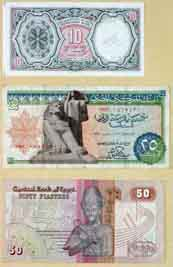

 左写真の紙幣は１ポンド以下で上から１０、２５、５０ピアストルです。 ２つ目の理由は釣り銭がないと言ってそのまま高額紙幣を貰おうとする魂胆です。３つ目はこちらエジプトの事情で、細かいお金を どんどん纏めて日本で言うレジから何処かに持っていってしまい、そこには本当に無い事もあります。こんな事がありますので、出かけると誰かから細かいお金を借りる事がしばしあります。それを食事中に返されると大変です。何 がって？臭いのです。うっかり触ると手が本当に臭くなるのです。食事が出来なくなりますので遂「いらない」と言ってしまいます。 何故こんなに臭いかって、紙幣の印刷にはお金が掛かるので、紙幣の交換がされていないのです。長い間市中を廻ります、手垢、汗 などが付いて、臭い靴下と同じ臭いが強烈にします。また、紙幣はくちゃくちゃに丸められて使用されています。 ３６章「初めての反撃値切り交渉」に述べているように、こちらの人は紙幣を手の中に入れてもみくちゃにして手渡しして使っています。 最低通過に１０ピアストル紙幣があります。何かの時に会社で２０ポンドを両替して貰いました。これで釣りがないと言われずにすむ と思ったからです。１ポンドが１００ピアストルですので１０ピアストル紙幣が２００枚来ます。部屋に置いておくと臭い匂いが漂ってどうしようもありません。そこで洗 うことにしました。洗面所で水を入れ紙幣を取りあえず５０枚入れてかき混ぜますと、見る見るうちに水は黒くなります。水を取り 替えること３回でようやく洗濯が終わりです。これを更に残り１５０枚洗濯します。 乾かそうとすると半分になった紙幣とセロテープが沢山出てきました。破けるとセロテープでつないで使っていたことが分かります。 紙幣は綺麗になって白っぽくなってしまいました、どうもインクまで少し落ちたような感じがします。これを市中で使ったら嫌な顔 をされてしまいました。理由は分かりません。 それからは少額紙幣の両替は止めて、何とかお釣りがないと言われないように気を遣って買い物をしていたように思います。 帰国すると日本の紙幣の有り難みを本当に感じながら使わせてもらっています。 ２００１年９月１日 記
|